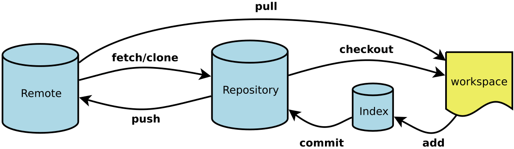

命令行与git常用命令
更新日期:
命令行
什么是命令行
命令行：command-line interfere(cli)
图形用户界面: Graphical User Interface(GUI)
常用命令
pwd 显示当前工作目录 process working directory
cd 切换目录 change directory
mkdir 创建目录 make directory
mkdir -p 递归创建多个目录 --parents no error if existing, make parent directories as needed
ls 列出目录内容 list
ls -a 可以显示.开头的文件 all
ls -l 列出文件的详细信息 long listing format
touch 创建文件
rm/rmdir 删除文件/目录 remove
rm -r 删除目录 --recursively 递归地
mv 文件或目录的移动或更名 move
cp 将文件拷贝至另一文件 copy
echo like echo 1 > test.txt
cat 显示文件内容和合并多个文件 like cat test.txt,also like cat file1 file2 > file
less 按页显示文件 j - 向前移动一行,k - 向后移动一行,G - 移动到最后一行,g - 移动到第一行
clear 清屏
du 统计目录／文件所占磁盘空间的大小 disk usage
du -sh 以易读的方式显示总共大小 --summarize --human-readable
ps 报告程序状况 process status
head 显示开头某个数量的文字区块 like head -n 3 test.txt
tail 显示结尾某个数量的文字区块
xxx -h 至少可以通过以下三种中的一种获取命令的帮助信息
xxx --help
man xxx
小技巧
Alt + . 使用上一条命令的最后一个参数
!! 执行上一条命令
. 当前目录
.. 上一层目录
~ 根目录
- 上一次目录
多个命令之间可以用;或&&分隔，前者命令错误不中断
管道(pipe)
前一个命令的输出为后一个命令的输入，like cat test.txt | less
Path
告诉命令行去哪找命令，用英文分号分隔加路径，Windows在高级系统设置中
vi与vim
vi是一种计算机文本编辑器，是“Visual”的不正规的缩写。vi是一种模式编辑器。不同的按钮和键击可以更改不同的“模式”。Vim（Vi IMproved）是一种升级版。
默认为不可编辑模式，i：输入模式 Windows中Esc：退出 输入:切至命令模式 w:write q:quit wq:保存并退出
深入学习请参考
git
git日常使用的6个命令，如图所示

图中的几个专有名词：
Workspace：工作区
Index / Stage：暂存区
Repository：仓库区（或本地仓库）
Remote：远程仓库
一、创建新仓库
在当前目录
git init
二、配置
显示当前的Git配置
git config –list
编辑Git配置文件
git config -e [–global]
设置提交代码时的用户信息
git config [–global] user.name “[name]”
git config [–global] user.email “[email address]”
三、检出仓库
创建一个本地仓库的克隆版本：
git clone /path/to/repository
如果是远端服务器上的仓库：
git clone username@host:/path/to/repository
四、添加和提交
添加到暂存区
git add [filename]
git add *
git add .
改动已经提交到了HEAD，但是还没到你的远端仓库
git commit -m “代码提交信息”
提交工作区自上次commit之后的变化，直接到仓库区
git commit -a
提交时显示所有diff信息
git commit -v
五、推送改动
上传本地指定分支到远程仓库
git push origin master
强行推送当前分支到远程仓库，即使有冲突
git push origin master –force
1.git支持本地仓库有多个远程仓库
2.git远程仓库需有名字，默认为origin
3.每个仓库可以有多个分支，默认分支为master
4.本地分支与远程分支可以不同，例如：git push origin master1:master2
六、分支
列出所有本地分支
git branch
列出所有本地分支和远程分支
git branch -a
切换到指定分支，并更新工作区
git checkout [branch-name]
新建一个分支，并切换到该分支
git checkout -b [branch]
删除分支
git branch -d [branch-name]
删除远程分支
git push origin :feature
七、更新与合并
更新本地仓库至最新改动
git pull
合并其他分支到当前分支
git merge
从远程下载但最新代码但不merge，不更改工作目录
git fetch
八、撤销
恢复暂存区的指定文件到工作区
git checkout [file]
恢复某个commit的指定文件到暂存区和工作区
git checkout [commit] [file]
恢复暂存区的所有文件到工作区
git checkout .
重置暂存区的指定文件，与上一次commit保持一致，但工作区不变
git reset 版本号
重置暂存区与工作区，与上一次commit保持一致
git reset –hard 版本号
重置当前分支的指针为指定commit，同时重置暂存区，但工作区不变
git reset [commit]
重置当前分支的HEAD为指定commit，同时重置暂存区和工作区，与指定commit一致
git reset –hard [commit]
可以使用git reflog找回，只要commit过就不会丢失
查看信息
显示有变更的文件
git status
git status -s show status concisely
git status -b show branch information
显示当前分支的版本历史
git log
显示当前分支的最近几次提交
git reflog
显示暂存区和工作区的差异
git diff
显示暂存区和上一个commit的差异
git diff –cached [file]
显示工作区与当前分支最新commit之间的差异
git diff HEAD